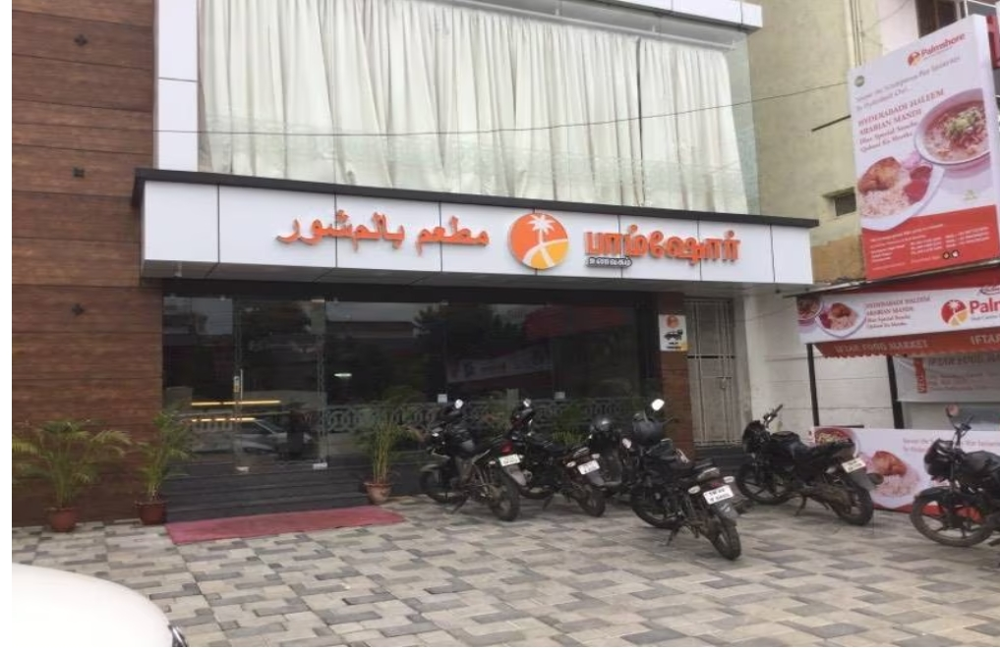

Palmshore Restaurant

Palmshore Restaurant in Ramapuram, Chennai, is a popular dining destination known for its flavorful Arabian,
Indian, and seafood dishes.
Established in 2008, the restaurant has garnered a reputation for quality food and
warm hospitality.
Cuisine & Menu
Palmshore offers a diverse menu featuring Arabian barbecues, Yemeni mandi, North Indian, Chinese, and Mughlai
cuisines.
Signature dishes include grilled meats, biryanis, and seafood specialties. The restaurant also
provides buffet options, making it suitable for group dining and special occasions.
Ambience & Facilities
Located on Mount Poonamallee High Road in Ramapuram, Palmshore features a spacious banquet hall accommodating up
to 400 guests, ideal for events like weddings and receptions
. The venue offers centralized air conditioning, dress changing rooms, and a separate dining area.
Parking is available for approximately 30 vehicles.
Timings & Contact
Address: Plot 8, Park Dugar, Mount Poonamallee High Road, Ramapuram, Chennai 600089
Phone: +91 44 4270 2244
Hours: Open daily from 11:00 AM to 11:00 PM
Reviews & Ratings
Palmshore has received mixed reviews. On Restaurant Guru, it boasts a high rating of 4.5 out of 5 based on over
33,000 reviews . However, on Tripadvisor, it holds a more moderate rating of 3.3 out of 5 from 20 reviews . Some
patrons praise the buffet's affordability and variety, while others have noted inconsistencies in food quality
and service.
For more details or to make a reservation, you can visit their official website or check out their Zomato page.